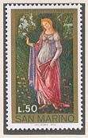
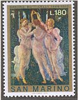
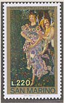
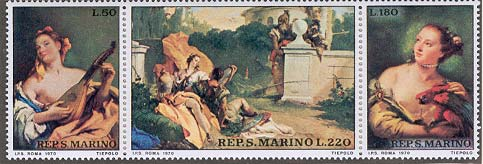

|
Italian Masterpieces
|
 |
 |
 |
|
The
Renaissance was a time of wonderful art, though one
artist in particular stood out, that was Sandro
Botticelli (1445-1510). This painter
created some of the most renowned pieces of art in
European history, one great painting being Allegory of
Spring.
This early work of
the artist was inspired by the poetry of Angelo
Politiano, a many-sided man of literary genius.
As a
mythological artwork, it was an amazing change from the
normalcy of past times. It is one of the most remarkable
and astounding pieces of Renaissance art with the
wondrous symbols, style, story of the piece and also the
intriguing history of Botticelli himself.
A set of three
stamps was issued the Feb. 23, 1972 by San Marino, Sc.
768 - 770, Mi 995 - 999. They show details from the "Allegory
of Spring", exhibited in the Galleria degli Uffizi in
Florence. The 50 L value shows "Simonetta Vespuci as
Venus", the 180 L "The Three Graces", and the 220 L
"Flora".
|

|
Giovanni Battista (Giambattista)
Tiepolo was born in Venice
in 1696; he died at Madrid, 27 March, 1770. His artistic
career was derived from a careful study of the works of
Titian, Piazzeta, Ricci, and especially Veronese. Up to
1750 he worked in Venice and various places in the north
of Italy, then in Germany, in Würzburg. In 1761 he
accepted the invitation of Charles III, King of Spain,
to come to that country to decorate the royal palace of
Madrid. He is the last of the great Venetian painters;
his works are magnificent in force, brilliance, and
skill. As a draughtsman and colorist, few have
approached him; as an etcher, he took a high position.
San Marino commemorated on 10th of Sept. 1970 the 200th
death anniversary of the artist by a nice strip of
three stamps, Sc. 733-735, Mi. 959-961. 50 L "Girl with
Mandolin", Detroit Art Gallery (UK); 180 L "Girl with
Parrot", Oxford, Ashmohon Museum (UK); 220 L "Rinaldo
and Armida Surprised", Chicago, Institute of Art (USA). |
|
|
|